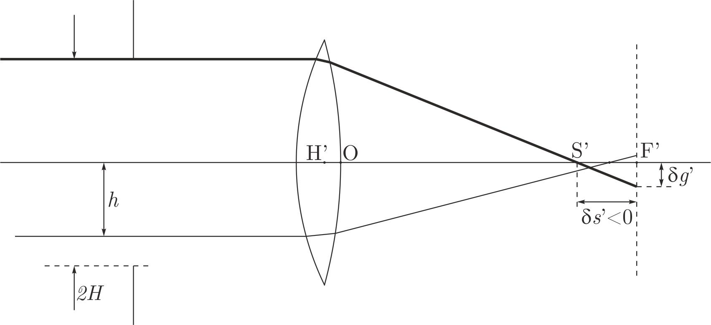
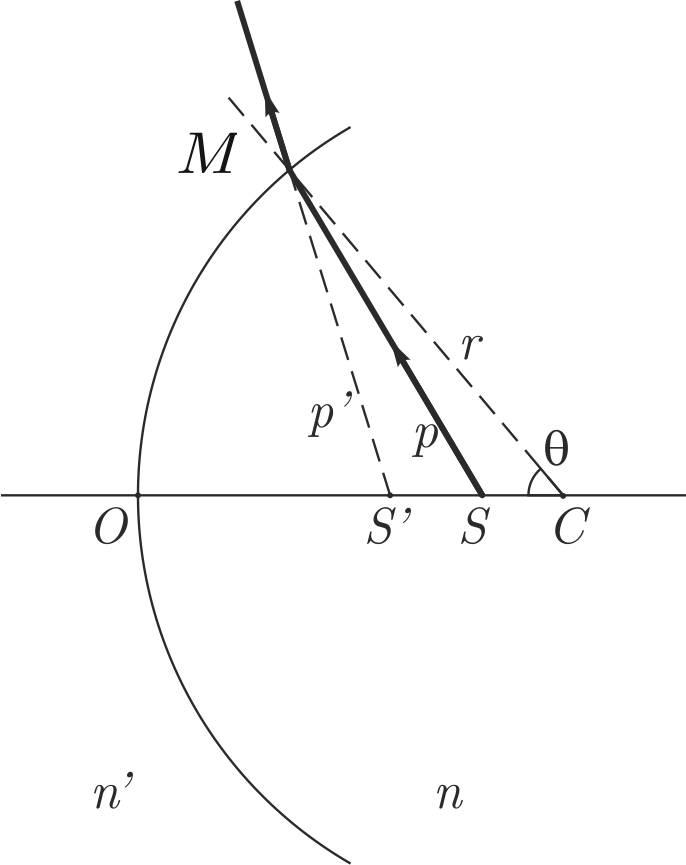
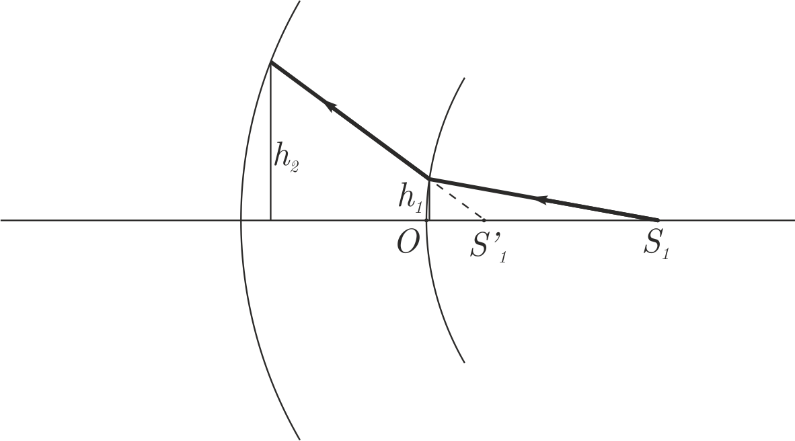
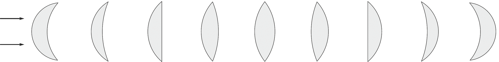

X22 (2022) — English translation
Optical aberration is an error or image error in an optical system caused by the deviation of the beam from the direction in which it would go in an ideal optical system. Aberrations can be characterized based on both geometric and wave optics. Depending on various parameters (coordinates of rays and angles of incidence), an optical system can exhibit various aberrations (and their compositions): spherical aberration, coma, astigmatism, etc. In this problem, within the framework of geometric optics, only the spherical aberration of monochromatic light is studied. Only lenses with spherical surfaces are considered. Spherical aberration occurs due to mismatched focal points for light rays passing at different distances from the optical axis.
Please note that in Part C the task is to prove some relations. If you fail, you can still use the given relationships to solve parts D and E of the problem. In the problem you will have to do a lot of calculations. For convenience, when describing aberrations, some conventions on the names of quantities are introduced. These agreements must be adhered to in your decision.
- All quantities that relate to what happens AFTER the refractive surface are hatched, and those that BEFORE the refractive surface are unshaded. - The (back) focus $F'$ of a lens is the point of convergence of a parallel paraxial beam of rays incident on a collecting lens. For a diverging lens, the concept is introduced similarly. The front focus $F$ of the lens will not interest us in this problem. - The focal plane is the plane perpendicular to the optical axis, passing through the focus of the lens. - Longitudinal spherical aberration $\delta s'$ is the distance between point $F'$ and the point of intersection with the optical axis of the refracted extreme beam of the beam. - The magnitude of spherical aberration is considered positive if the outer rays converge further from the lens than the focus. The magnitude of spherical aberration is considered negative if the outer rays converge closer to the lens than the focus. Answers must always be given taking into account the sign. - Transverse spherical aberration $\delta g'$ is the radius of the scattering circle observed in the focal plane. - Various points in the drawing (on the lens, ray, intersection) are indicated by capital letters. When specifying a point, select it (thick circle). - Different distances between points are indicated by lowercase letters. If the solution requires you to enter some distance value, in addition to indicating it in the figure, write it explicitly next to the figure, for example, $OA = a$. - The distance from the optical axis to an arbitrary ray under consideration is indicated by the letter $h$. The full width of the symmetrical beam is $2H$. - The distances along the optical axis from the refractive surface to the points of intersection of the rays with the optical axis are designated $s$ (for rays before refraction) and $s'$ (after refraction). And the points themselves are $S$ and $S'$, respectively. For $s$ and $s'$ the choice of sign is important. Zero is considered to be the point of intersection of the refractive surface and the optical axis.

The problem considers the following correction to paraxial optics, i.e. it will be possible to assume that $h$ are small compared to the radii of curvature of the surfaces. But because Since the problem examines precisely the small effects of aberrations, then when obtaining answers, expanding in a Taylor series, it is necessary to retain the corresponding terms.
In this part of the problem, it is necessary to accurately (quantitatively) construct the course of the requested rays in the lenses in the answer sheet. For rough construction or practice, use additional sheets. The answer sheet should contain the final construction. It is highly desirable without corrections. The thickness of the rays in the answer sheet should not exceed 1 mm.
Let's consider the simplest optical system for which the magnitude of spherical aberration can be easily calculated: a plano-convex thin lens. A beam of light parallel to the optical axis falls on the flat side of the lens. For a “thin lens,” its thickness can be neglected. We can also assume that points $O$ and $H'$ (Fig. 1) are located in the center of the lens. The radius of curvature of the surface of a convex surface is $R$ and the refractive index of the lens is $n$.
Let us now consider what the intensity distribution looks like in the scattering circle observed in the focal plane. Let a wide beam of light fall on the flat side of a plane-convex lens.
First, let's consider one spherical surface on which refraction will occur (remember that a lens is two refractive surfaces). Because the object for this refractive surface can be an image created by another refractive surface, then in general both the object and the image can have longitudinal aberration ($\delta s$ and $\delta s'$, respectively). The original object, the real object, of course, does not possess an aberration.
Your task will be to show the validity of the following relation (up to higher orders $h$): $$ \cfrac{n'\delta s'}{s'^2}-\cfrac{n\delta s}{s^2}=-\cfrac{h^2}{2} Q^2(s)\left(\cfrac{1}{n's'}-\cfrac{1}{ns}\right), $$ где $Q(s)=n\left(\cfrac{1}{r}-\cfrac{1}{s}\right)=n'\left(\cfrac{1}{r}-\cfrac{1}{s'}\right)=\mathrm{inv}.$

First, you need to obtain some invariant relation to the geometric parameters. The word “invariant” in this case means preserving the type of dependence for the parameters before and after the refraction of the beam.
Everything described above simply refers to the phenomenon of refraction. To move on to the magnitudes of aberrations, you need a certain point from which to count them. As in part B, for such a point we choose the point of convergence (origin) of paraxial rays (i.e. for which $\theta =0$). The distances for these points should be designated $s_0$ and $s_0'$. Accordingly, for non-paraxial rays it will be possible to take into account the aberration values: $s=s_0+\delta s$ and $s'=s_0'+\delta s'$.
As a rule, optical systems consist of many spherical surfaces (for example, a lens - 2, a primitive microscope (two lenses) - 4, etc.). The relationship proved above can be applied sequentially for each refractive spherical surface, ultimately relating the aberration of the object and the final image, without calculating intermediate aberrations.
Let's consider several refractive surfaces (there are two of them in Figure 3). Let us introduce small angles $\alpha _i=\cfrac{h_i}{s_i}$ and $\alpha_i'=\cfrac{h_i}{s_i'}$.

The results obtained in part C can be used here and further without conclusion. In this part of the problem, it is necessary to calculate the parameters of a collecting lens for which the spherical aberration for an incident parallel beam of light would be minimized. It is required to make a thin collecting lens with a focal length $f'=10~cm$ from glass with a refractive index $n=1.5$. Because the lens must be considered thin, then for two refractive surfaces we can assume that $h_1=h_2=h$. It is clear that the system has one optimization parameter - the radius of curvature of one of the surfaces, because the second radius is uniquely determined by the refractive index and focal length.
Lenses with a given focal length can be manufactured with different radii of curvature of surfaces.

By using defocusing (shifting the observation plane from the focal plane to a plane closer/farther from the lens), you can reduce the circle of scattering observed on the screen. Let a wide parallel beam of light fall on the lens, and the observed longitudinal spherical aberration is $\delta s'$.
Source: https://pho.rs/p/505